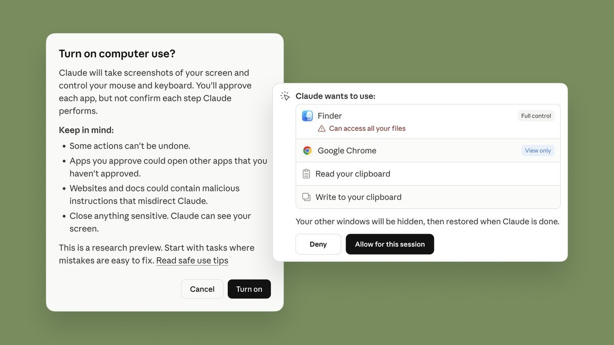
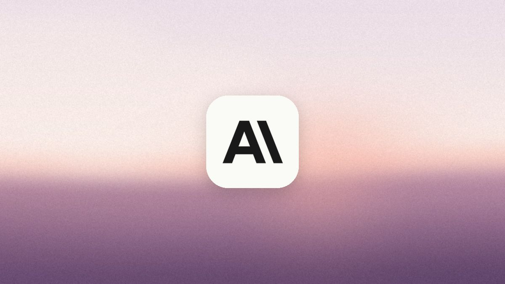
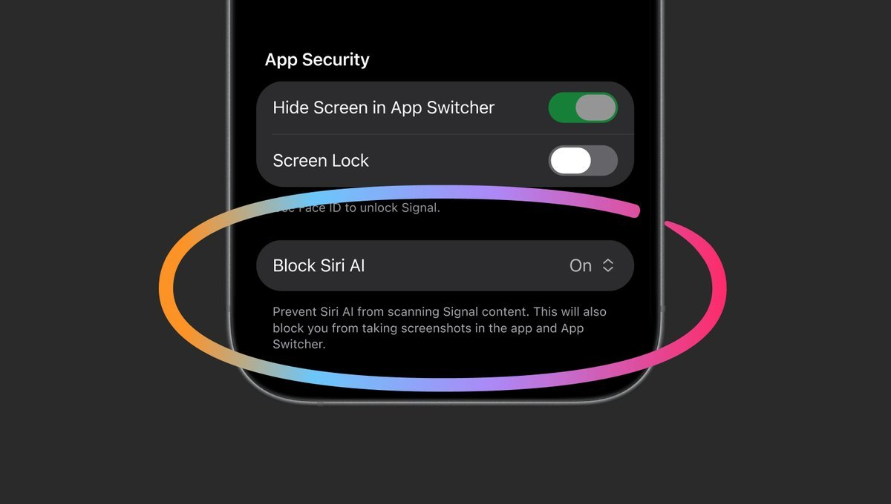

AI
Brief
Saturday edition
Claude can now work in the apps on your work computer
Also: a coding agent's leaked key exposed customer prompts, Lean's community certifies the Claude-assisted Riemann proof, Teams agents face a deadline on file access, and Signal shuts out phone agents.
What matters today

Claude uses work computers
Anthropic opens Claude computer use to Team and Enterprise plans.
- In beta since November 20: Claude sees the screen and clicks and types in the desktop apps a user allows. It is off by default and reaches companies gradually.
- Admin controls: owners turn it on and can limit it to roles and to chosen apps. Anthropic warns there is no sandbox: a web page or email on screen could steer Claude.
Why it mattersAn admin switch now decides which apps an agent may touch, the way IT approves software. Apps without a connector still get used by agents, so their screens join what a company signs off on.
Teams tightens agents' file access
Microsoft changes how Teams agents get to files.
- Action required: agents that send or receive files in Teams must update by March 1, 2027; after that, a token from a client secret gets refused. Announced November 20.
- Permissions: from January 15, 2027, agents also declare file permissions in their app manifest, in line with OneDrive and SharePoint sign-in rules.
Why it mattersMicrosoft now treats an agent's file access like an app's: declared up front and approved. Agents in Teams get a deadline, and admins get a clearer view of which files each agent can touch.
A coding agent leaks a key
Together AI says stored customer prompts were stolen.
- How: an AI coding agent put a credential in a public GitHub repository. Someone used it to download prompt samples from June and July and search them for passwords.
- Fixes: no data retention by default for new accounts, short-lived credentials, secret checks on every pull request, new rules for coding agents.
- Wider: on November 22, OpenRouter dropped three providers after researchers' leak tests.
Why it mattersThe leak came from a coding agent holding secrets, not from the model. Prompts are customer data, so keeping none becomes the default buyers expect, not a premium promise.

Claude and the Riemann proof
An Anthropic mathematician posts a Riemann proof made with Claude.
- November 20: Levent Alpöge says it covers the Generalized Riemann Hypothesis, and that he and Claude wrote it out in the Lean proof checker.
- November 21: Lean's community certifies the 17 million-line proof; checkers that cannot accept a false proof passed it.
Why it mattersThe proof was trusted within a day because a machine could check it, not because anyone trusted the AI behind it. AI work that carries checkable evidence wins trust faster.

Signal blocks phone agents
Signal stops AI assistants built into phones from reading its screen.
- Since November 20: screenshots are blocked in the app on iOS 27, and on Android when an AI assistant tries to capture the screen. Users can turn the protection off in settings.
- Why: Signal says Apple, Google and Microsoft give apps no easy way to keep these agents out, which is also why it cannot do the same on macOS yet.
Why it mattersAgents that work by reading the screen now meet apps that refuse them. If more apps follow, agent builders will need a permitted way into each app instead of screenshots.
Also in the news
- ChatGPT Space: since November 20, rolling out to Plus users 18 and older on web, desktop, iOS and Android; it replaces Library with pages and decks that can update from connected apps.
- Anthropic IPO closes: November 20; about $93.5 billion raised at $83 a share, plus a $26.0 billion private sale to AMD, Broadcom, Google, Micron, Microsoft, Nvidia and TSMC.
- OpenAI on copying: November 20; attacks that recover a model's hidden reasoning succeeded 0.2% of the time against GPT-6.2 Astra, down from 54.0% against GPT-6 Astra.
- Google agent rules: November 20; in preview, each tool call an agent proposes is checked against the user's request and rules written in plain language.
- AWS Agent Registry: November 20; agents can carry a verified domain name and be found by any AWS user, so others can confirm who runs an agent before connecting.
- AWS Quick guardrails: November 20; in preview, admins block prompts by topic, word or personal data, per user or group, with a test mode that only logs matches.
- Kiro for VS Code: November 20; Amazon's coding agent is generally available as a VS Code extension and reads the same project setup as the Kiro IDE.
- Foundry Managed Compute: November 20; generally available; Microsoft runs 150+ open models on dedicated GPUs.
- Data center tax: November 20; Trump threatened a "tremendous tax" on US companies that build data centers abroad, without details.
- Tencent Hy4: November 20; flagship weights under Apache 2.0, 770 billion parameters. The team says its next model will be substantially larger.
- Inkling 2 Mini: November 20; Thinking Machines releases open weights of a coding model that needs about 20GB of memory, enough for a laptop.
- WorkBuddy: Tencent's office agent can click and type in Windows and Mac apps with no API, in public beta since November 20.
- Meta ads in AWS Quick: through Meta's ads MCP server, Quick can analyze, create and edit campaigns and budgets in plain language; available now.
- Amazon and Decart: Amazon is reportedly near a $7.5 billion deal for the Israeli world-model startup, whose tools help models train on Amazon's own chips; it could close early next week.
- Autonomous weapons: UN talks in Geneva ended with countries agreeing to "start discussing options" and two years to propose rules, some of which may stay optional.